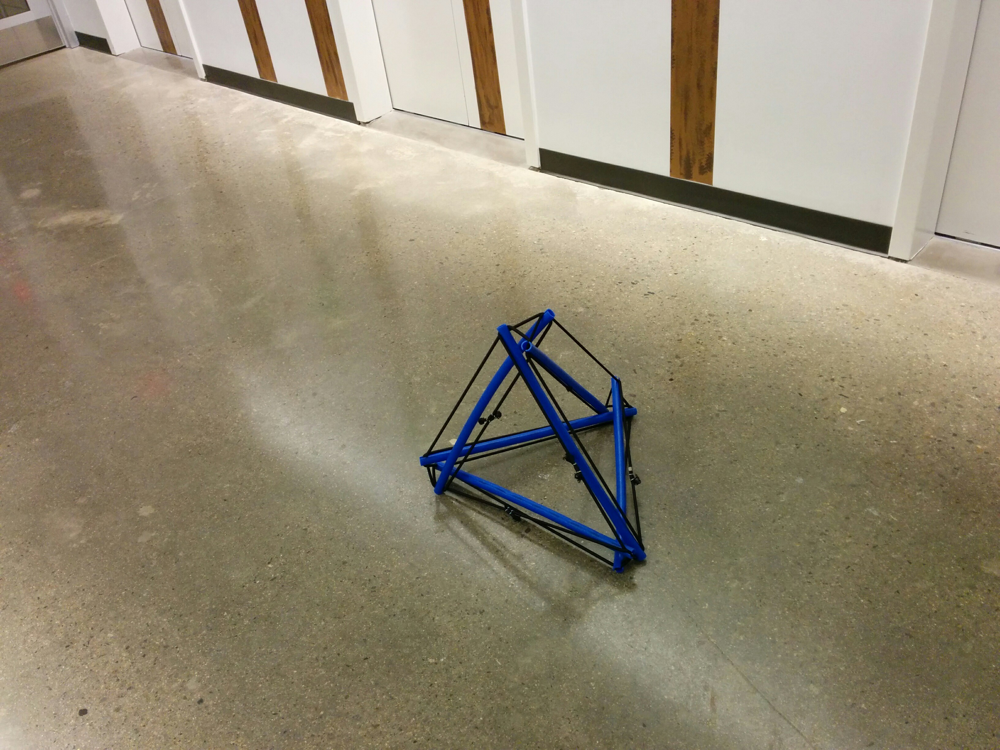

I have a toy tensegrity construction kit with struts that are maybe six inches long, but I wanted something on a larger scale -- maybe with two foot struts. I decided to use plastic tubing -- -- and bungee cord.
I chose to use 1/2 inch PEX tubing because it is readily available, inexpensive, and easy to cut.
What I didn't realize at the time is how much work it is to straighten. Even the straight lengths from Home Depot aren't straight. Nothing at Home Depot is straight. One can find straight two foot lengths in a longer piece though.
I originally started with a 50 foot coil of PEX and tried to straighten it.
I first tried straightening two foot lengths of tubing in an electric oven by heating them to 280F for 10 minutes. I think this woulld have worked better if I had a better way at the time to hold the tubing straight as it cooled. My own oven was broken at the time though so I was using the oven at a friend's house.
I used 4 feet of aluminum dryer duct and a hot air gun to make an oven. The ducting was wrapped in towels to provide some insulation. A length of tubing was tied in various places along its length to a piece of angle iron using cotton sash cord, and placed inside the duct. Hot air was blown into the duct until the temperature of the tubing reached nearly 300F at the other end (I think I used a meat thermometer if I recall correctly). This worked except that I could only straighten one or two pieces at a time and the sash cord left indentations in the tubing. Also the ends still had some bend in them, presumably because there was not sufficient leverage to hold them straight.
I eventually got 30 2 foot lengths of 1/2 inch PEX tubing that were straight enough. I then used a router table with a brand new 1/4 inch bit and purpose built sled to cut a slot 3/4 inch deep at each end of each strut.
30 struts is enough to make each of the Platonic solids.
I purchased the bungee cord, the crimping tool and the connectors from HTB Bungee Cords .
To ensure that all of my loops were the same size, I built a jig out of K'nex that coould be used to measure a loop and hold it under constant tension as I crimped the ends together.
The jig has four coplaner pulleys on top around which the bungee cord can be looped to form a horizontal rounded corner rectangle with a known perimeter.
There are two additional vertically oriented pulleys in the top front of the jig. Between those tow pulleys is where the bungee cord gets crimped into a loop.

In the photo above, the bungee cord comes off the spool (not shown) to the bottom left of view, passes around the right vertical pulley, then the left, then around the four horizontal pulleys and back across the crimping area where the free end is clipped to the frame of the jig.
The plastic bottle on the right hand side of the jig contains nails to serve as a weight (the total weight of bottle, clip, and contents was 17.4 ounces). It is clipped to the bungee cord just before it passes around the right vertical pulley to ensure constant controlled tension on the bungee cord while it is crimped.
Now that I had 30 struts, each with its own bungee loop stretched end to end, it was time to start building.
I first made a tetrahedron, the simplest of the Platonic solids. The slot at the end of each strut is deep enough to hold the buingee cord from another strut as well as its own. Each vertex of the tetrahedron has the ends of three struts coming together, each catching the bungee loop of the strut clockwise to it in its slot. Clockwise or counterclockwise doesn't matter as long as every vertex has the same chirality.
The other Platonic solids were trickier though because the bungee cord doesn't stay in the slots until the entire structure is under tension.
1/8 diameter hole to accomodate a reusable cotter pin.